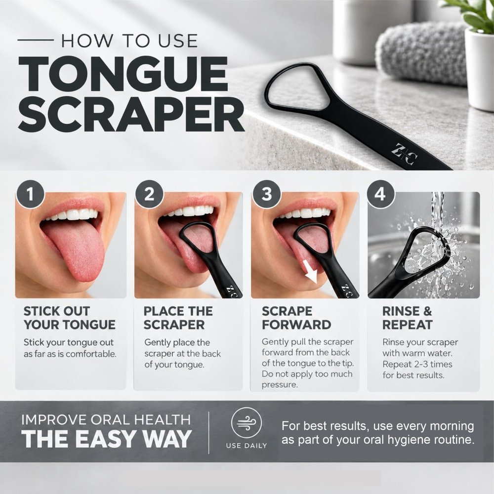

| Sem. 1 | Sem. 2 | Sem. 3 | Sem. 4 | Sem. 5* | Sem. 6 | Sem. 7 | Acumulado | |
|---|---|---|---|---|---|---|---|---|
| Gasto | $18,66 | $75,19 | $92,32 | $85,12 | $87,92 | $54,52 | $120,17 | $533,90 |
| Clics | 11 | 34 | 53 | 56 | 91 | 57 | 88 | 390 |
| CPC | $1,70 | $2,21 | $1,74 | $1,52 | $0,97 | $0,96 | $1,37 | $1,37 |
| Pedidos | 4 | 5 | 9 | 1 | 6 | 11 | 17 | 53 |
| Unidades | 5 | 5 | 9 | 1 | 6 | 11 | 17 | 54 |
| Ventas | $99,45 | $99,45 | $179,01 | $19,89 | $119,34 | $218,79 | $338,13 | $1.074,06 |
| Conversión (pedidos / clics) | 36,4% | 14,7% | 17,0% | 1,8% | 6,6% | 19,3% | 19,3% | 13,6% |
| ACoS | 18,8% | 75,6% | 51,6% | 428% | 73,7% | 24,9% | 35,5% | 49,7% |
| Ganancia neta | +$26,34 | −$30,19 | −$11,32 | −$76,12 | −$33,92 | +$44,48 | +$32,83 | −$47,90 |
| Impresiones | 2.046 (panel) | 4.080 o más | 10.485 o más | 6.910 o más | 11.999 o más | 3.980 o más | 13.896** | — |
| CTR | 0,54% | 0,83% o menos | 0,51% o menos | 0,81% o menos | 0,76% o menos | 1,43% o menos | 0,63%** | — |
Gastó más del doble que la semana 6 y vendió 50% más. El ACoS sigue debajo del equilibrio (45,2%) y del de cualquier semana anterior salvo la 6 y la 1. Con siete semanas el acumulado queda en ACoS 49,7%, todavía arriba del equilibrio.
| Dónde salió | Campaña | Clics | Pedidos | Conversión | CPC | Gasto | ACoS | Neto |
|---|---|---|---|---|---|---|---|---|
| Búsquedas | automática | 188 | 33 | 17,6% | $1,15 | $216,76 | 33,0% | +$80,24 |
| Búsquedas | PRIMALS | 42 | 8 | 19,0% | $2,37 | $99,40 | 55,5% | −$18,40 |
| Fichas ajenas | automática | 85 | 5 | 5,9% | $0,88 | $75,15 | 75,6% | −$30,15 |
| Fichas ajenas | PRIMALS | 75 | 7 | 9,3% | $1,90 | $142,59 | 102% | −$79,59 |
| Búsquedas | las dos | 230 | 41 | 17,8% | $1,37 | $316,16 | 37,9% | +$61,84 |
| Fichas ajenas | las dos | 160 | 12 | 7,5% | $1,36 | $217,74 | 91,2% | −$109,74 |
Las búsquedas de la automática ya ganaron $80,24 en siete semanas, y $35,08 de eso es de esta semana. Toda la pérdida que queda (−$109,74) es de fichas ajenas, y casi toda de semanas pasadas: esta semana gastaron $2,25.
| Las búsquedas de la automática | Semana 6 | Semana 7 |
|---|---|---|
| Lo máximo pagado por un clic | $1,32 | $2,00 |
| Líneas a $1,00 justo (sem. 6) o entre $1,47 y $1,50 (sem. 7) | 23 de 37 | 16 de 36 |
| CPC | $0,98 | $1,39 |
| Impresiones de «tongue scraper» por día | 283 | 1.139 |
| Clics | 45 | 85 |
| Pedidos | 8 | 17 |
| Conversión | 17,8% | 20,0% |
| Gasto | $44,18 | $117,92 |
| Neto | +$27,82 | +$35,08 |
| Neto por clic | $0,62 | $0,41 |
La puja más alta compró volumen, y lo compró con ganancia. Casi el doble de clics y más del doble de pedidos. Las líneas que son sólo del 13-10 cuestan entre $0,82 y $0,99, y la del 14-10, $1,00: el cambio entró el 14 o el 15. O sea que los 85 clics salieron, en su mayoría, de cinco días.
Lo que hay que vigilar es el margen. A $1,39 por clic, las búsquedas empatan si convierten 15,4%. Esta semana convirtieron 20,0% y ganaron $0,41 por clic; con su 17,6% de siete semanas ganarían $0,19. Si la conversión vuelve al 15% de antes, el volumen nuevo deja de ganar plata.
Por unidad, la cuenta es otra. Con la conversión de siete semanas, a $0,98 cada unidad deja $3,43 y a $1,39 deja $1,10. A $1,39 las 1.000 unidades salen en unos trece meses en vez de casi dos años, pero dejan unos $2.300 menos. La puja nueva gana en las dos cosas sólo si la conversión de búsqueda queda en 20% o más, como esta semana.
| Con la conversión de… | Equilibrio (ACoS 45,2%) | Objetivo (ACoS 30%) | Paga hoy |
|---|---|---|---|
| «tongue scraper for adults», automática (45%, 20 clics) | $4,05 | $2,69 | $1,39 |
| Búsquedas, las dos campañas (17,8%, 230 clics) | $1,60 | $1,06 | $1,39 |
| Búsquedas de la automática (17,6%, 188 clics) | $1,58 | $1,05 | $1,39 |
| «tongue scraper», automática (15,1%, 93 clics) | $1,36 | $0,90 | $1,37 |
| Búsquedas largas, semanas 6 y 7 (14,5%, 55 clics) | $1,31 | $0,87 | $1,41 |
| Fichas ajenas de la automática (5,9%, 85 clics) | $0,53 | $0,35 | $0,75 |
Todo lo de búsqueda está entre el objetivo y el equilibrio: gana, pero menos que a $1,00. «tongue scraper» quedó justo en su equilibrio y las búsquedas largas un poco arriba; «for adults» podría pagar el triple. Las fichas ajenas pagan más de lo que valen, pero son $2,25 por semana.
| Término | Impr. | Clics | CPC | Gasto | Unid. | Lectura |
|---|---|---|---|---|---|---|
| tongue scraper | 7.971 | 43 | $1,37 | $58,88 | 8 | CTR 0,54% · convirtió 18,6%, sobre su 12% de seis semanas · +$13,12 |
| tongue scraper for adults | 858 | 12 | $1,39 | $16,72 | 6 | CTR 1,40%; la mitad de los clics compró · +$37,28 |
| tung scraper | 735 | 3 | $1,48 | $4,44 | 1 | «tongue» mal escrito; 45 impresiones en la semana 5 |
| tongue cleaner | 703 | 2 | $1,50 | $3,00 | 0 | de 126 a 703 impresiones |
| raspalenguas | 3 | 1 | $1,50 | $1,50 | 1 | la búsqueda en español |
| tongue scrapers for cleaning | 1 | 1 | $1,50 | $1,50 | 1 | — |
| tough scraper | 156 | 1 | $1,50 | $1,50 | 0 | «tongue» mal escrito, otra vez |
Otras veintidós búsquedas con un clic y sin venta ($30,38 entre todas): tongue scraper set, tongue scraper with nice case, lingua cleaner, disposable tongue scraper, tongue scraper for adults black, to brush my tongue, tongue buddy, tongue scraper uv case, palate expander, black rubber toothbrush, men's personal hygiene kit for mouth, tongue scraper with teeth, reusable tongue cleaner non metal, tiny tongue scraper, tongue scraper with rubber handle, tongue scraper metal with case, adult toothbrush hard, tongue tool sanitizer, tongue scraper for adults tsa approved, tongue scraper for adults fsa eligible, tongue scraper with holder for adults y tongue scraper travel case.
Catorce de las diecisiete ventas vinieron de dos búsquedas. En la semana 6 era al revés: cinco de ocho vinieron de búsquedas de un clic. La puja más alta llevó el anuncio a muchas más búsquedas sueltas (palate expander, adult toothbrush hard, black rubber toothbrush) que no tienen que ver con un raspador. Ninguna repite, así que no hay una negativa que las corte de a una.
| Ficha | Precio | Impr. | Clics | Gasto | Unid. |
|---|---|---|---|---|---|
| 3 raspadores con estuche de metal B0C8ZCY2WM (el copiado) | $4,99 | 13 | 1 | $0,75 | 0 |
| 2 pack acero B0BYNJQFP8 | $3,99 | 2 | 1 | $0,75 | 0 |
| Tung, kit cepillo y gel B01EYSWPRY | $9,99 | 3 | 1 | $0,75 | 0 |
A $0,50 de puja Amazon casi no las muestra: 18 impresiones en la semana, contra 1.392 en la 6. El producto copiado bajó de $5,99 a $4,99.
| Semana 3 | Semana 4 | Semana 5 | Semana 6 | Semana 7 | |
|---|---|---|---|---|---|
| Impresiones | 1.480 | 900 | 3.361 | 1.981 | 7.971 |
| Impresiones por día | 211 | 129 | 373 | 283 | 1.139 |
| Clics | 6 | 5 | 15 | 15 | 43 |
| CTR | 0,41% | 0,56% | 0,45% | 0,76% | 0,54% |
| CPC | $0,95 | $0,98 | $0,97 | $0,97 | $1,37 |
| Imagen principal | vieja | vieja | vieja | vieja (6 de 7 días) | nueva |
Cuatro veces más impresiones y casi tres veces más clics. Con la puja nueva el anuncio entró en subastas que antes perdía, en lugares que se miran menos; así el CTR baja aunque la imagen sea mejor. El 1,0% que se esperaba era con el mismo volumen, y el volumen cambió. La medida limpia de la imagen sale de la semana 8 contra esta, con la misma puja: la base pasa a ser 0,54% con unas 1.100 impresiones por día.
Lo que sí se movió es la conversión. 20,0% en búsquedas contra 15,5% de las seis semanas anteriores, en la primera semana con la galería nueva completa. No alcanza para atribuirlo (pasa 16 veces cada cien sin que nada cambie), pero va en la dirección que se buscaba.

Las dos ahora son de 1600 × 1600 (eran de 1280). La principal y las imágenes 2 y 5 siguen iguales. Las cinco están en el mismo orden.
| Lo que se pidió | Estado | Cómo se sabe |
|---|---|---|
| Sustitutos y Complementos a $0,50 | Sí | Las tres líneas con ASIN posteriores al 13-10 cuestan $0,75 justo ($0,50 más el 50% de las pujas dinámicas), con 18 impresiones en la semana. |
| Campaña manual en exacta | Hecha el 19-10 | Todavía no aparece: el informe termina ese mismo día. La semana 8 es la primera que la mide. |
| Pedir reseñas a los pedidos del 14-09 al 8-10 | Hecho el 19-10 | El registro datos/resenas_solicitadas.csv no tiene filas, así que no hay cuenta de cuántas se pidieron. |
| Corregir las imágenes 3 y 4 | Sí | En la ficha el 20-10, en 1600 × 1600 (sección 6). |
| No tocar la puja de las búsquedas | Cambió | Desde el 14 o el 15-10 se paga hasta $1,50, y $2,00 en dos líneas (sección 4). |
| El CSV de la semana 7 | Sí | 13 al 19 de octubre. El 13 se pisa con la semana 6: tres líneas descontadas. |
| Campaña | Clics | Pedidos | Conversión | CPC | Gasto | ACoS | Neto |
|---|---|---|---|---|---|---|---|
| PRIMALS (pausada el 1-10) | 117 | 15 | 12,8% | $2,07 | $241,99 | 76,0% | −$97,99 |
| Automática | 273 | 38 | 13,9% | $1,07 | $291,91 | 38,6% | +$50,09 |
| Las dos | 390 | 53 | 13,6% | $1,37 | $533,90 | 49,7% | −$47,90 |
| Zriceros - Manual exacta | sin clics esta semana, por eso no aparece en el informe de términos. Cómo verificarla → | ||||||
La automática lleva +$50,09. Lo que falta para que el proyecto quede en cero es la mitad de lo que perdió PRIMALS: a la ganancia de esta semana, una semana y media.
| Escenario | Publicidad por unidad | ACoS | Publicidad total | Neto del ciclo | Sobre el capital* |
|---|---|---|---|---|---|
| Como las siete semanas juntas | $9,89 | 49,7% | $9.887 | −$887 | −26% |
| Equilibrio | $9,00 | 45,2% | $9.000 | $0 | 0% |
| Búsquedas, las dos campañas | $7,53 | 37,9% | $7.528 | +$1.472 | +43% |
| Como la semana 7 | $7,07 | 35,5% | $7.069 | +$1.931 | +56% |
| Búsquedas de la automática | $6,57 | 33,0% | $6.569 | +$2.431 | +70% |
| ACoS objetivo del 30% | $5,97 | 30,0% | $5.967 | +$3.033 | +88% |
| Como la semana 6 | $4,96 | 24,9% | $4.956 | +$4.044 | +117% |
La semana 7 cambia el plazo, no el escenario. A 11 pedidos por semana las 1.000 unidades tardaban casi dos años; a 17, unos trece meses. El neto por unidad baja de $4,04 a $1,93. Es el cambio que la semana 6 pedía (más volumen), pagado con margen.
| Campaña | Tope del plan | Gasto/día, sem. 6 | Gasto/día, sem. 7 | Uso del tope |
|---|---|---|---|---|
| Automática | $14,00 | $7,79 | $17,17 | 123% |
| PRIMALS | $8,00 | pausada | pausada | — |
| Manual exacta | $5,00 | no aparece | no aparece | — |
Con la puja nueva la automática gastó $17,17 por día, más que el tope de $14 del plan. Amazon deja pasar el presupuesto diario algunos días mientras el mes no supere el presupuesto por la cantidad de días; si el presupuesto sigue en $14, a este ritmo puede cortar los últimos días de octubre, y eso se vería en el informe de la semana 8 como menos clics sin que cambie nada más.
| Predicción | Real | Lectura |
|---|---|---|
| CTR de «tongue scraper»: 1,0% o más | 0,54% | la fila de «debajo de 0,6%: mirar las impresiones por día»; se cuadruplicaron con la puja |
| Clics de búsqueda, automática: 30 a 50 | 85 | la puja más alta |
| Pedidos de búsqueda, automática: 4 o más | 17 | se cumplió, y de sobra |
| CPC en fichas ajenas: $0,50 o menos | $0,75 | la puja quedó en $0,50; el 50% lo suman las pujas dinámicas |
| Clics en fichas ajenas: 3 a 12 | 3 | se cumplió |
| Manual exacta: 2 o más de 7 | — | se creó el 19-10, el último día del informe |
| Gasto total: $45 a $70 | $120,17 | por encima, por la puja |
| Ganancia neta: +$10 a +$45 | +$32,83 | dentro del rango |
| Calificaciones: 8 o más | 7 | no se cumplió por tercera semana |
La estrategia, en una línea: dejar quieta la puja que trajo el récord una semana más, para saber si el volumen nuevo gana plata o sólo la mueve. El paso 1 dice qué no tocar y con qué número se decide la semana que viene; la manual en exacta, recién creada, entra en la misma medición. El 2 sigue con las reseñas. El precio se queda en $19,89.
Cambios respecto de la semana 6: CAMBIO de la propuesta anterior en las búsquedas de la automática: la semana 6 decía dejarlas en $1,00; esta dice dejarlas como están hoy, que pagan $1,39. Sustitutos y Complementos y las imágenes 3 y 4, la manual en exacta y la tanda de reseñas del 14-09 al 8-10 salen de la lista porque están hechos.
Antes de empezar (una sola vez, 1 minuto)
Las tres cosas que no se tocan en ningún paso: el interruptor de arriba de todo de una campaña (apaga la campaña entera), el botón Archivar (no tiene vuelta atrás) y el presupuesto de la automática.
| Qué hacer | Nada. Las pujas (cercana y amplia en $1,00, Sustitutos y Complementos en $0,50), la estrategia de puja de la campaña y el presupuesto, como están hoy. |
|---|---|
| Dónde se ve | Campañas → nombre Campaña - 9/1/2026 automatica → Configuración (o Ajustes) → Estrategia de puja. Lo que paga el informe corresponde a Pujas dinámicas: aumentar y reducir. |
| Por qué | Con esta configuración la semana hizo 17 pedidos y ganó. Pero la ganancia por clic bajó de $0,62 a $0,41, y con la conversión de siete semanas sería $0,19. Si la conversión de esta semana (20%) se sostiene, la puja nueva gana más por semana y vende el doble; si vuelve al 17,6%, vende el doble y deja menos por unidad (sección 4). Una semana no alcanza para saberlo; dos semanas juntas (unos 170 clics) sí. |
| Qué no hacer | No subir la puja de «tongue scraper for adults» aparte ni crearle una campaña: con 20 clics, el 45% todavía no es un número para apostar. No tocar la manual en exacta recién creada (siete búsquedas a $1,00, solo bajada). No reactivar PRIMALS. |
| Cómo se verifica | En el informe de la semana 8, juntando las búsquedas de las semanas 7 y 8: 20% de conversión o más, se queda así (gana más por semana que a $1,00 y vende el doble). Menos de 20%: la semana 8 trae el paso para volver la estrategia a «solo reducir», como estaba en la semana 6, que deja más plata por unidad. |
| Qué se logra | Que las calificaciones dejen de estar en 7. Esta tanda son los pedidos de la semana 6, la de 11 ventas; a los de la semana 7 (17 ventas) el botón se les habilita a partir del 21-10. |
|---|---|
| Clic por clic |
|
| Qué no hacer | No pedirle además la reseña por mensajes al comprador: con el botón ya se le pidió, y Amazon no permite pedirla dos veces en el mismo pedido. |
| Por qué anotarlos | El registro (datos/resenas_solicitadas.csv,
una fila por pedido) es lo que dice, en unas semanas, cuántas reseñas llegan por
cada diez solicitudes. Hoy está vacío, así que las del 19-10 no se pueden contar. |
| Cómo se verifica | El resumen del registro, debajo, deja de estar vacío, y en dos o tres semanas las calificaciones pasan de 7. |
| Clic por clic |
|
|---|
Control final (2 minutos, al terminar todo)
En el panel de publicidad, Campañas. La lista tiene que quedar así:
| Campaña | Estado | Presupuesto |
|---|---|---|
| Campaña - 9/1/2026 automatica | Activa | sin cambios |
| Campaña - 9/1/2026 PRIMALS | Pausada (no archivada) | sin cambios |
| Zriceros - Manual exacta - oct 2026 | Activa o Programada | $5,00 |
Y dentro de la automática → Grupo RASPADOR → Segmentación: las cuatro filas en azul; cercana y amplia a $1,00, Sustitutos y Complementos a $0,50, como están.
| Semana 7 (real) | Semana 8 (si esto funciona) | Si no da eso, qué significa | |
|---|---|---|---|
| Conversión de búsqueda, semanas 7 y 8 juntas | 20,0% (sólo la 7) | 20% o más | entre 15,4% y 20%: vende más pero deja menos por unidad, se vuelve a «solo reducir»; debajo de 15,4%: a $1,39 pierde plata |
| Clics de búsqueda, automática | 85 | 70 a 110 | menos de 50: cambió la puja o la estrategia, o el presupuesto cortó |
| Pedidos de búsqueda, automática | 17 | 11 o más | — |
| CPC de búsqueda | $1,39 | $1,30 a $1,45 | — |
| CTR de «tongue scraper» | 0,54% | 0,6% o más, con unas 1.100 impresiones por día | igual o menos con el mismo volumen: la imagen principal no mueve el CTR |
| Búsquedas largas (todo menos «tongue scraper» y «for adults») | 30 clics, 3 pedidos | 4 pedidos o más en unos 30 clics | de nuevo 3 o menos: la cola larga a $1,50 no paga |
| Clics en fichas ajenas | 3 | 0 a 5 | — |
| Manual exacta: términos con clics | — | 2 o más de 7 | ninguno: a $1,00 esas búsquedas no se ganan, y es un dato, no un error |
| Ganancia neta | +$32,83 | +$10 a +$40 | negativa con la conversión arriba de 15%: mirar el gasto en búsquedas largas |
| Calificaciones de la ficha | 7 | 8 o más | — |
La fila que importa es la primera. La semana 7 vendió como ninguna pagando más por clic. Si la conversión aguanta en 20%, el proyecto vende el doble por semana y gana más; si no, se vuelve a la configuración de la semana 6, que deja más por venta.